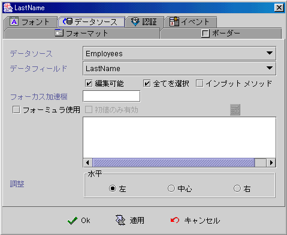
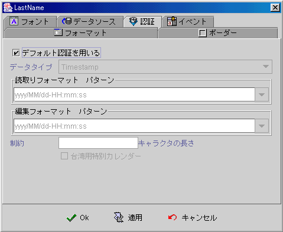
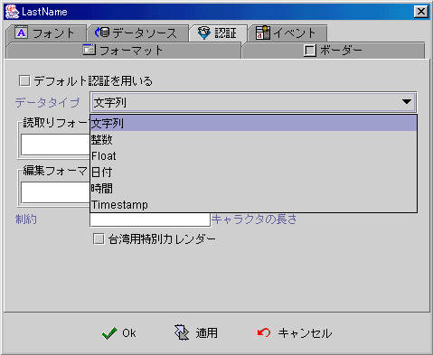
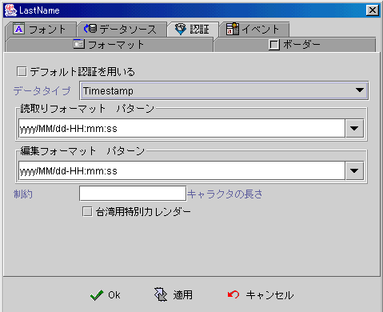
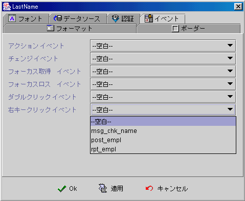

|

エディットコンポーネント (Edit component)
共通プロパティ (common properties)
データソース (data source)
認証 (validation)
イベント (event)
フォーミュラ get/set プロパティ
(formula get/set properties)
エディット (Edit)コンポーネントは通常にデータソースに連結し
(data
Source)，データフィールド (data field) の表示 (display)、インプット (input)、アップデート
(update)に使用されているもっとも基本的なコンポーネントです。
データソース
(data source)
-
データソース (data source)：データソース
-
データフィールド (data field)：データソース中のデータフィールド。
-
編集可能 (editable)：ユーザ編集可能かどうか。
-
全部選択 (select all)：Focus
をコンポーネント上に移動する時に，コンポーネント中の値を編集が可能で，マークをつけると
(mark) ，全部選択状態になります (select all)。
-
自動切換えインプットメソッド (enable input method)：Focus
をコンポーネント上に移動する時に，インプットメソッドは今ユーザが使用しているシステム入力メソッドに切り替えます。
-
Focus
加速器
(accelerator)：必要なホットキーの設定。アプリ−を実行する時に，ユーザは
"ALT" キー+ホットキーを押し，Focus を移動できます。
-
フォーミュラ使用（use
formula）：フォーミュラ
(formula) でプロセスの結果表示。データソース (data source)
の保存・削除・変更 (changed)する時に，フォーミュラ
(formula) は自動的に即時に値を更新します。
-
初期化のみに機能 (initial only)：フォーミュラ
(formula)はフォームオープンした後に，結果をエディットボックスに表示し，その後に再び計算・変更
(compute and refresh)しません。デザインナーは【コンポーネントデータ設定】的のイベント
(set component data event)か，SetProp()
のフォーミュラで更新させます。
-
整列 (alignment)：

▲Top
認証 (validation)
-
デフォルト認証：

-
値の類別：データ連結
(data
binding) とフィールドタイプ(field type) 或いはフォーミュラ (formula)
の結果によって，フォーマット(formatted)の類を決めます。

-
読取りフォーマットパターン (read format pattern)：フォーマットパターン選択
(format pattern)
或いはユーザ自身はインプットフォーマットを編集することができます。
フォーマットパターン編集
(format
pattern)。
-
エディットフォーマットパターン
(edit format pattern)：フォーマットパターン選択
(format pattern)
或いはユーザ自身はエディットフォーマットを編集することができます。
フォーマットパターン編集
(format pattern)。
-
文字長さの制限：インプット文字の長さが制限されます。

▲Top
イベント (event)
-
アクションイベント (action event)：ユーザは Enterキーを押すと，イベントを起動します (fire event)。
-
チェンジイベント (changed event)：毎回インプット値が変わると，イベントを起動します
(fire event)，どのキー（削除キー(delete)
を含め，方向キーを含めない）でインプットすると，イベントを起動します。
-
Gain Focus イベント： Focus
をエディットボックスに移動するとイベントを起動します
。
-
Lost Focus
イベント： Focus をエディットボックス外に移動するとイベントを起動します
。
-
ダブルクリックイベント (double clicked event)：マウス左キーをダブルクリックするとイベントを起動します。
-
右クリックイベント (right clicked event)：マウス右クリックするとイベントを起動します。

▲Top
フォーミュラ
get/set プロパティ
(formula get/set properties)
SetProp("コンポーネント名",
"プロパティ", 値) ：プロパティ設定。
SetProp("コンポーネント名",
"プロパティ", 値1,
値2)：プロパティ設定。
GetProp("コンポーネント名",
"プロパティ")：プロパティ読み取り。
| Set
Properties |
プロパティ
(Properties) |
値1
(Value 1) |
値2
(Value 2) |
説明
(Descriptions) |
| enabled |
1 有効，0 無効 |
|
有効か無効。 |
| setfocus |
1 Focusの設定 |
|
Focus設定。 |
| visible |
1 表示，0
隠し |
|
表示か隠し。 |
| repaint |
1 再描き，2 即時に再描き |
|
再度描き。 |
| revalidate |
1 フォーミュラで再度計算 |
|
フォーミュラで再度計算。 |
| editable |
1 編集可，0 読み取りのみ |
|
編集可か読み取りのみ。 |
| text |
文字列 |
|
値を含む文字列の設定。 |
| select |
スタート位置 |
終わり位置 |
スタートから終了まで位置の文字を選択にし，位置は
1 から。 |
| caretpos |
カーサー位置 |
|
カーサー位置の設定，位置は１から。 |
| Get
Properties |
| プロパティ
(Properties) |
転送
(Return value) |
説明 (Descriptions) |
| isenabled |
1 有効，0 無効 |
有効か無効。 |
| isvisible |
1 表示，0 隠し |
表示か隠し。 |
| iseditable |
1 編集可，0
読み取りのみ |
編集可か読み取りのみ。 |
| text |
文字列 |
エディットボックス中に値を含む文字列。 |
| masktext |
文字列 |
エディットボックス中に値を含むフォーマットされた文字列。 |
▲Top
Copyright © 2001~
2004 Probe Technology . All Rights Reserved.
Questions, comments,
and suggestions to Service@probe.com.tw
|